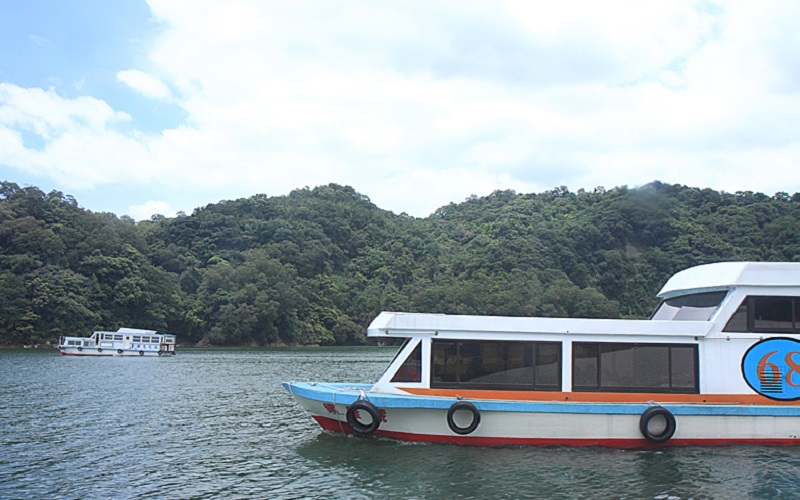

Shimen Reservior
Taoyuan City
Shimen Reservior
The Shisen Reservior is one of the major reservior in northern Taiwan. It was once the biggest dam in the Far East.
Nowadays, it was not only served as a water facility, but also becomes a tourist attraction because of the beautiful
moutains and lakes there. Shihmen Reservoir is also a good place for flowers. When approaching spring, cherry blossoms,
azaleas and Chinese Fringetree bloom all along the lakeside. There are bike trails and boat trip, which offers diverse leisure.
During the rainy season,when the reservior discharge, the scene is so spectacular that attracts many tourists.
- Best seasons: Spring and summer
- Transportation:
Take the train to Zhongli Railway Station, continue by Taoyuan Bus (bound for Shimen Reservoir)
to Shimen stop.